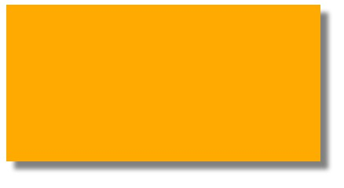

前言
本章将介绍CSS3中各种盒的知识点；主要包含以下内容：
CSS3中各种各样盒的类型概念、浏览器支持情况；
当盒中内容超出容纳范围时，如何利用属性来让浏览器按照自己想要的方式对盒中内容进行显示；
掌握给盒添加阴影的属性；
掌握几种“box-sizing”属性值的不同含义，能够正确的使用box-sizing属性来定义样式中给定的元素的宽度值和高度值中是否包含内部补白区域，以及边框的高度和宽度；
盒的类型
inline-block
css中我们使用display来定义盒的类型，总体上分为block与inline类型。
css2.1追加了一个盒类型：inline-block，他属于block类型之一，但在显示上具有inline的特点，ie8以下不支持该属性。
因为width和height用作block元素上，所以对inline元素使用width和height是没用的。
曾经我们若是要实现分列显示多个block元素是要借助于float属性的，
但是float是魔鬼，他根本就不应该用于布局，他会吞噬元素/破坏元素，让元素高度失效，最后让元素脱离文档流，
float还会引起父级元素的“塌方”，然后我们又需要清除浮动，而且浮动可能引起很多bug，所以应该尽量少用他布局。
比如一行多列布局，我们完全就可以用inline-block属性替代之，bug也会少很多的。
inline-table
用于表格前后文字不换行，并可设置vertical-align 设置外部文字top对齐或者bottom对齐。
list-item
可以将div变为列表显示，个人认为意义不大。
run-in/compact
将元素指定为以上两个类型时，若果元素后面还有block类型的元素，run-in元素将会被包含在block元素的内部，而compact类型的元素将被放置在左边。
对于盒模型容纳不下的元素
如果块级元素拥有高宽，设置overflow可以控制显示....该属性较熟悉变不研究了。
在css中有一个非常有用的属性“text-overflow”，若是文字超出宽度，便会显示“...”省去了我们js操作的过程。
这节基本没什么东西。。。。
对盒使用阴影
好东西来了，这章梦游到现在，其实就是为了它，这是个相当有用的属性，和为文本设置阴影联合起来，会让你的网站增色不少。

真是漂亮啊，各位就是简单的操作下自己博客的h1元素，为其加上背景为其文字加上阴影，你会发现，你写的博客好看多了。
box-sizing属性
box-sizing属性的解析我前前后后读了几次都没能理解，“使用width属性与height属性来指定元素的高度和高度”。。。
这是干什么的呢？我们继续看下去，发现好像就是IE6对box的相关解释哇。。。。
结语
莫名其妙的一章又完了，css确实难学。。。